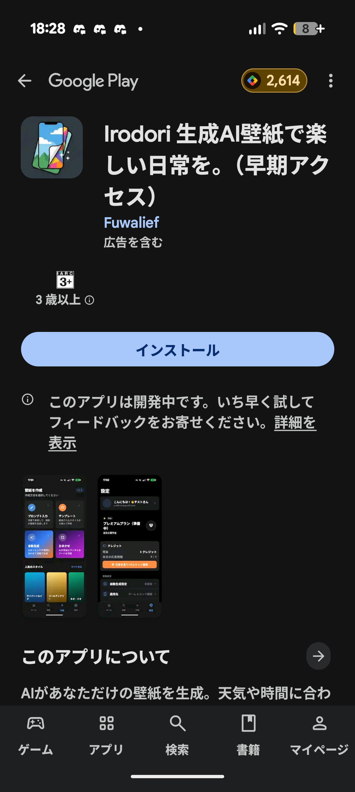

1
テスターグループに参加
ベータテストに参加するには、まず Google Groups の「Irodori-Tester」グループに参加する必要があります。以下の手順で進めてください。
- 下のボタンから Irodori-Tester のグループページを開きます。
- ページ上部にある 「グループに参加」 ボタンをクリックします（下の画像 左）。
- ダイアログが表示されたら、表示名を入力してください。その他の項目はそのままでOKです（下の画像 右）。
- 右下の 「グループに参加」 をクリックすれば、参加完了です。
※ Googleアカウントへのログインが必要です。ベータテストで使用するGoogleアカウントでログインしてください。

ページ上部の「グループに参加」をクリック

表示名を入力して、右下の「グループに参加」をクリック
2
テスターになる
グループへの参加が完了したら、次に Google Play のテストプログラムに登録します。この手順は スマートフォン（Android）から行ってください。
- 下のボタンからテストプログラムのページを開きます。
- ページ下部にある緑色の 「テスターになる」 ボタンをタップします（下の画像 左）。
- 「あなたはテスターです。」と表示されれば、テスター登録は完了です（下の画像 右）。
※ ステップ1と同じGoogleアカウントでログインしている必要があります。

ページ下部の「テスターになる」をタップ

「あなたはテスターです。」と表示されれば完了
3
アプリをインストール
テスター登録が完了すると、同じページに 「Google Play でダウンロード」 のリンクが表示されます。そこからストアページへ移動してインストールしましょう。
- ステップ2で「あなたはテスターです。」と表示されたページを下にスクロールします。
- 「Google Play でダウンロード」 のリンクをタップして、ストアページを開きます。
- アプリ名の横に 「早期アクセス」 と表示されているのが目印です（下の画像参照）。
- 「インストール」 をタップすれば完了です。
※ テスター登録直後はストアに反映されるまで数分〜数十分かかることがあります。見つからない場合は少し時間をおいて再度お試しください。

「早期アクセス」と表示されたストアページ
ご注意
- info ベータ版はテスト目的のリリースです。動作が不安定な場合があります。
- bug_report バグの報告やフィードバックは contact@fuwalief.com までお送りください。
- devices Android端末のみ対応しています。
- exit_to_app テストプログラムはいつでも終了できます。